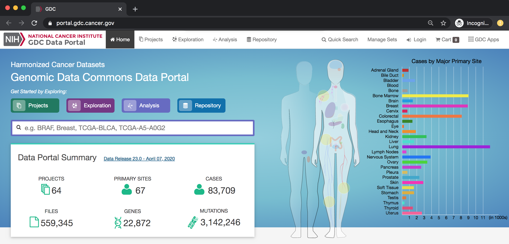
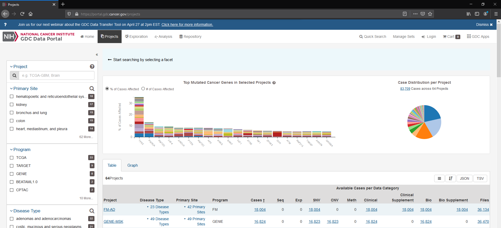

Precision medicine requires an ever-growing biomedical "big data" reference.
This growth is particularly striking for pathologies with a genomic basis, like cancer.
Accordingly, NCI/NIH has spearheaded the establishment of an interoperable, multi-petabyte sized
Genomic Data Commons (GDC) as a self-updating data ecosystem that the scientific community, including the citizen-scientist,
can populate with analytical applications.

Preliminary data exploration may be performed on the GDC site. However, further data analysis requires transport of the data to another environment.
